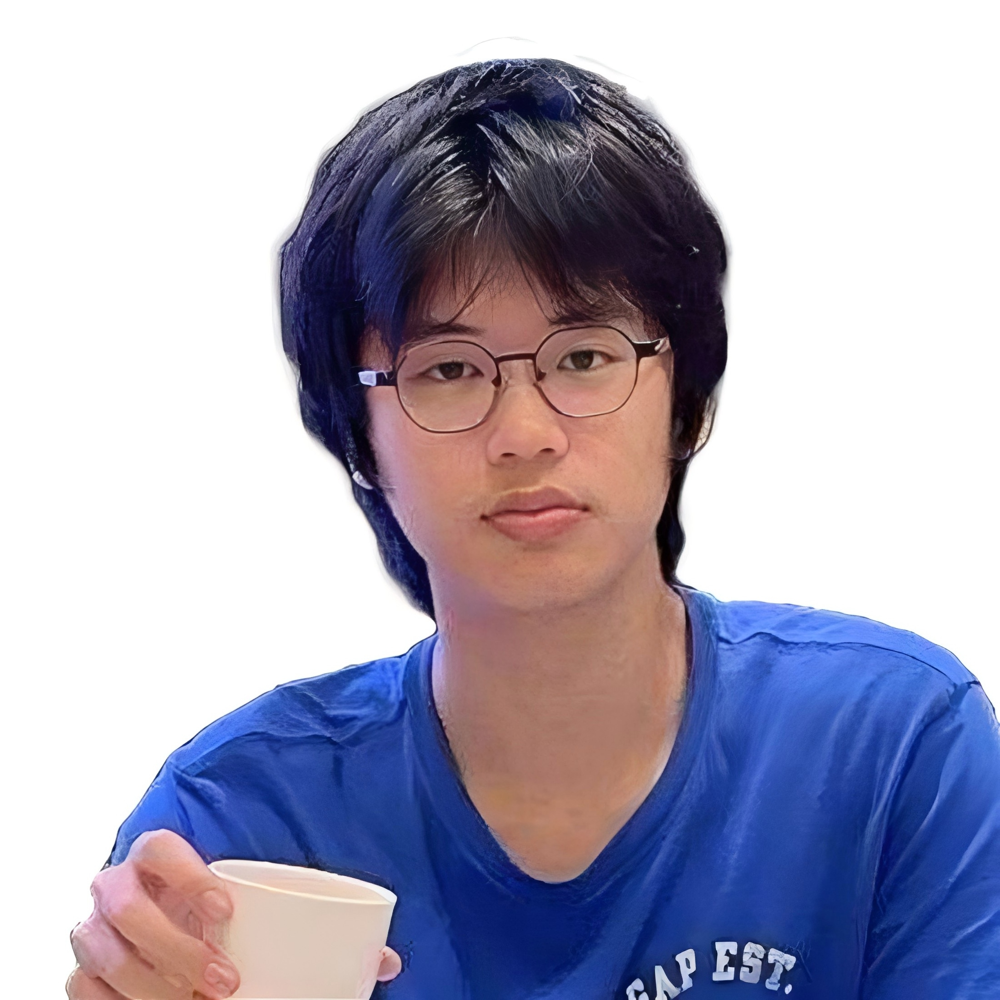

个人信息
- 姓名：叶承霖
- 出生日期：2002.8.20
- 居住地：广州市海珠区
- 电话：13719113230
- 邮箱：Clarenceye1@gmail.com
- 语言：国语，粤语（母语）；英语（CET4）
- 爱好：投资，羽毛球，徒步

教育背景
- 时间：2020.9 - 2024.7
- 本科：广东工业大学
- 专业：动画 (GPA: 3.4 / 4)
专业相关能力
核心工具：PS, Illustrator, 剪映, PR, AE
熟练使用 PS 和 Illustrator 制作海报，图形设计，排版，包装设计，字体设计，图片处理。会使用 AE 中 E3D, Form, Particular 等各种插件。
AI 应用：会 ComfyUI 工作流结合 API 制作人物对口型，声音替换等效果，或直接使用 Sora, 即梦, 可灵等平台。
工作与实习经历
广州家画信息技术有限公司 (甲方) 广告视频制作
2024 年 7 月 - 至今
用 AE, PS, 剪映, 根据需求自己设计脚本和寻找素材进行视频制作：
- 对公司自研 App, 小程序, 网页进行视频内录, 结合不同功能和创意制作广告视频。
- 对国内达人和海外达人视频素材进行剪辑创作, 产出广告视频。
- 制作公司自研 App 内动态和静态模板, Banner 等。
- 根据后台数据, 结合网络热点分析并改进视频以达到更多的消耗和转化。
涉及产品：加画框、童绘相框、美画匠、Frameit。
自由接单 (乙方) 视频包装与动效
2025 年 5 月 - 至今
在闲鱼和小红书上接单，制作活动快剪，香港艺人谈话多机位剪辑，游戏 UI 动效动图输出及各种可以制作的视频效果。
广州天游网络科技有限公司 (甲方) 游戏买量视频制作
2024 年 3 月 - 2024 年 6 月
用 AE, PR, 剪映, 在脚本和已有素材的基础上寻找素材, 游戏内录, 制作《轮回双生》《三国云梦录》《时之约》等海外游戏的买量广告视频。
广州博冠信息科技有限公司 (乙方) 游戏买量视频制作
2023 年 12 月 - 2024 年 3 月
用 AE, PR, 剪映, 制作网易游戏《率土之滨》《大话西游》《射雕》等国内游戏的买量广告视频, 进行视频剪辑和后期包装。
Mobvista (甲方) 品牌设计 (实习)
2023 年 9 月 - 2023 年 12 月
用 Illustrator, AE 根据风格和要求制作海报，KV，PPT，印刷品。对文字和图片内容进行调整排版，视频修改，品牌 GIF 图片动效的制作。